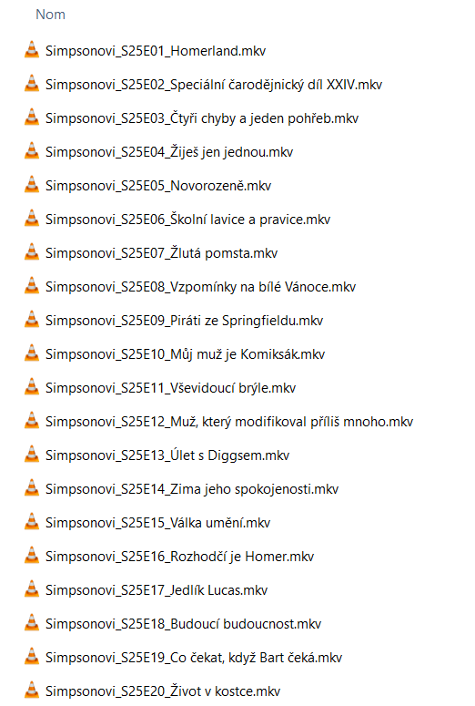
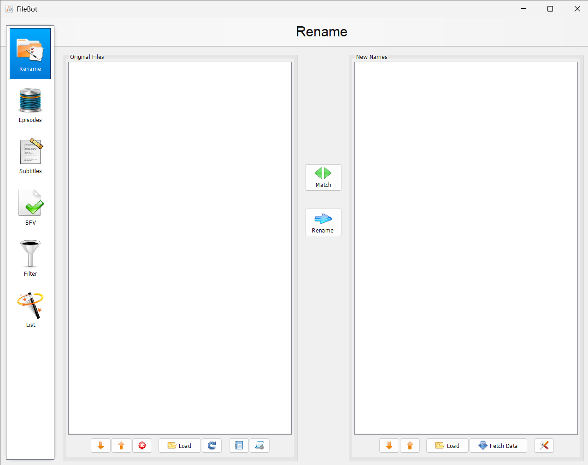
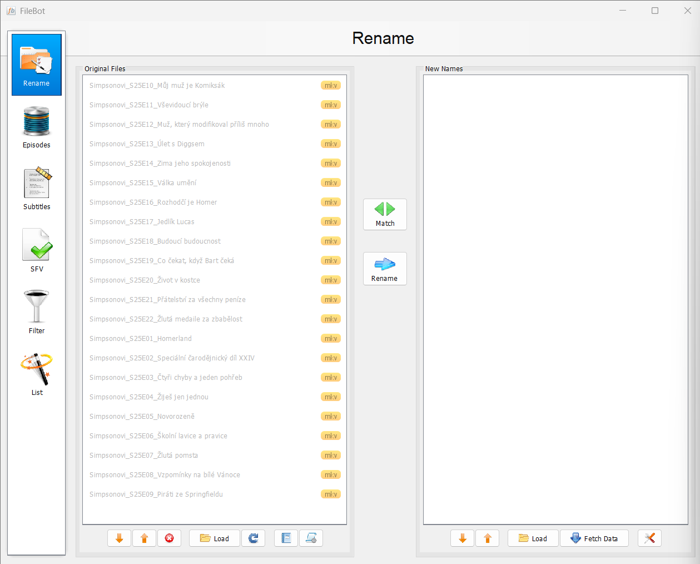
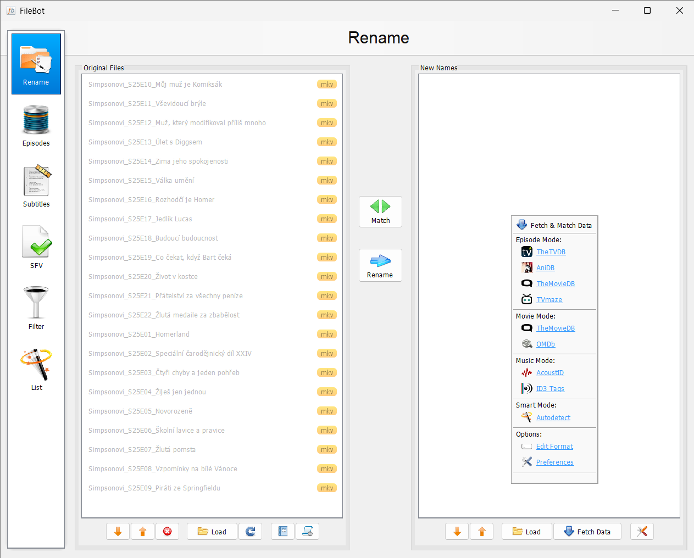
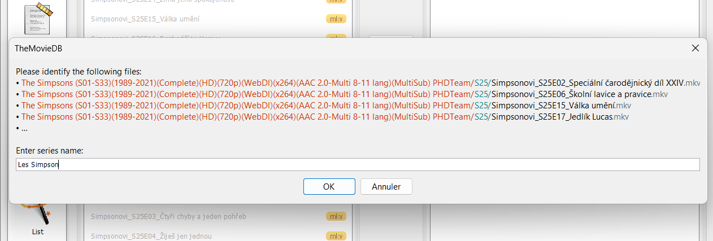
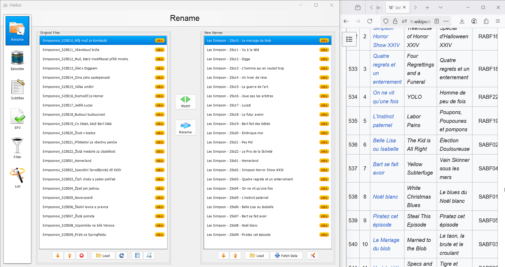

Renommer des fichiers avec Filebot
Filebot
Qui ne s’est jamais retrouvé avec des noms de fichiers du style S05xE12 ? Pour les gens un peu maniaques comme moi (🙋♂️), passer des heures à tout renommer à la main, c’est juste hors de question. Heureusement, j’ai trouvé un outil qui fait tout ça automatiquement : Filebot.
⚠️ Petite précision : les dernières versions de Filebot demandent une licence payante. Pour avoir le renommage gratuit, il faudra donc passer par une ancienne version (toujours dispo ici sur Github)
Pour l’exemple, j’ai pris des fichiers d’épisodes des Simpson (saison 25)… mais en polonais 😅. L’objectif : les renommer automatiquement avec les titres officiels en français (mais vous pourriez le faire dans n’importe quelle langue).

Étape 1
Il faut sélectionner tous les épisodes et les glisser dans l’encadré gauche de Filebot.


Étape 2
Ensuite, un clic droit dans l’encadré droit permet de :
→ choisir la langue souhaitée (anglais par défaut, mais dispo en FR et
bien d’autres)
→ puis de sélectionner la source dans laquelle Filebot va chercher les
titres officiels.

Si jamais la source ne trouve pas la série automatiquement, il faudra simplement l’aider en tapant son nom (dans mon cas : Les Simpson).

Étape 3
Et c'est tout ! Les fichiers sont renommés avec les bons titres. Il ne reste plus qu’à cliquer sur Rename. Vous pouvez ensuite vérifier les noms des épisodes, par exemple directement sur Wikipedia.
